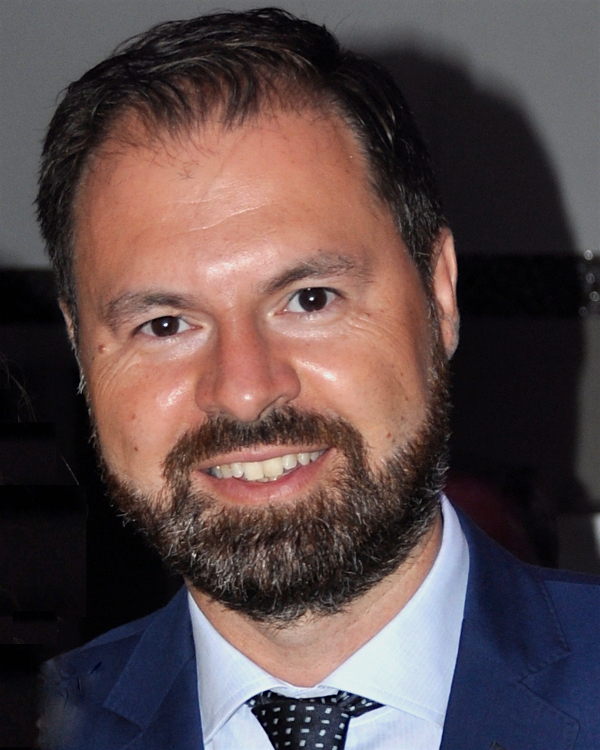

Welcome
I’m Luigi Iannelli, an associate professor of Automatic Control at the University of Sannio in Benevento. Here you can find out more about me, the courses I teach at the Department of Engineering and my research activities within GRACE, the Group for Research on Automatic Control Engineering.
Contact details
Università degli Studi del Sannio
Dipartimento di Ingegneria
Piazza Roma, 21
82100 Benevento, Italy

| e-mail: | luigi.iannelli (at) unisannio.it | |
| Phone: | +39 0824 305515 | |
| Fax: | +39 0824 325246 |
I am available on the following social networks: click on the images for getting into contact with me. Visit the Info page for further information about me.
News
-
10 May 2021 –
The Group for Research and Control Engineering (GRACE) of the University of Sannio in Benevento, Italy, is looking for a highly motivated researcher to develop her/his PhD thesis in control systems, in particular working on methodologies and key technologies for the development of safe and autonomous drones. Click here.
-
29 Sep 2020 –
University of Sannio among MathWorks Minidrone Masters: UNISANNIO team winner at the IFAC 2020 World Congress on July 16th, 2020.
-
11 Mar 2020 –
Tomorrow the Automatic Control course will start through a teleconference system based on WebEx. At the following link all the instructions for the registration.